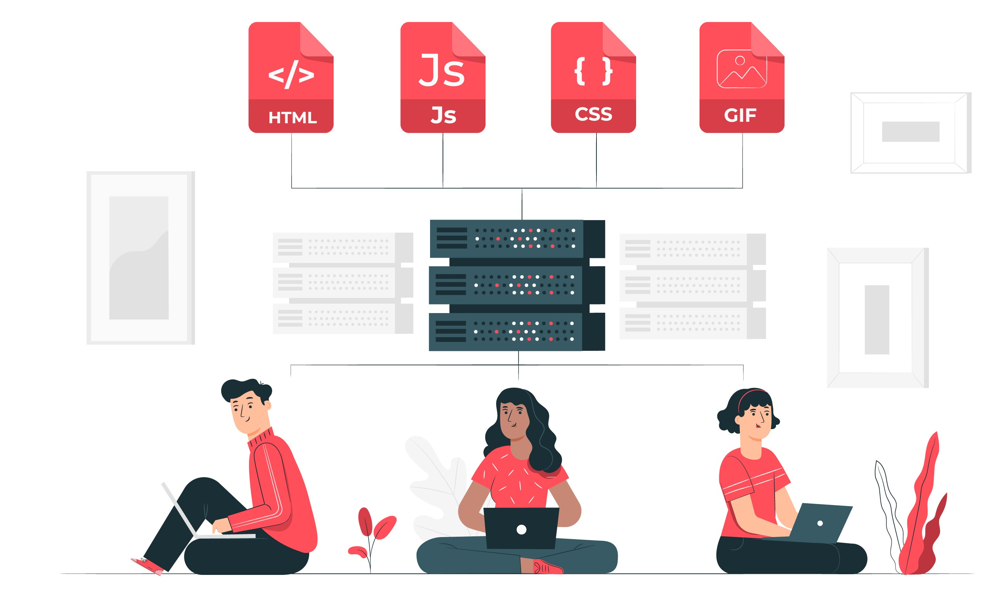
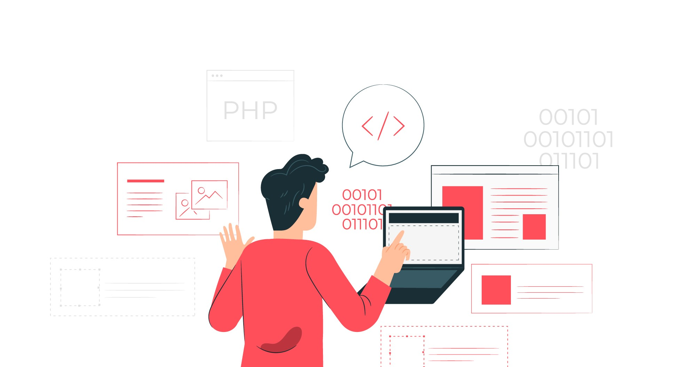

DEVELOPERS
Diseño y desarrollo webFrontend

El desarrollador Front End se encarga de conocer y ser parte de la experiencia de usuario en el sitio web para esto diseña de todo lo que vemos en la pantalla cuando accedemos a un sitio web como el tipo de letra, los colores, las adaptaciones a las distintos tamaños de pantallas, las interacciones, movimientos, efectos visuales, entre otros.
Basicamente se encarga de que el usuario sea capaz de navegar en el sitio web por medio de una interface sencilla de usar y funcional.
Backend

El desarrollador back-end es una parte fundamental de cualquier sitio web o aplicación web. Si está leyendo este texto, por ejemplo, es una señal de que la comunicación con el servidor fue exitosa y esto probablemente se deba al buen trabajo del programador Web Full Stack.
Basicamente se encarga de todo lo que pasa detras de la interfaces del usuario, por ejemplo todo el codigo que este escribe se ejecuta en el servidor del sitio como por ejemplo las peticiones a las bases de datos, la seguridad del sitio entre otras cosas.